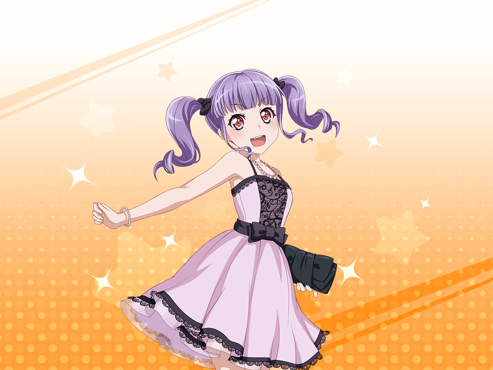

商店街
あこ
あ、{{userName}}さんだ！
あこ
こんにちは！
元気！？
あこ
あこはね、元気だよ！
今日もたっくさんバンドの練習して、
今はその帰りなんだ！
あこ
{{userName}}さんは、何してるの？
あこ
……このポスターを見てた？
あこ
あ！
あこも、これ知ってるよ！
あこ
あこ、実はね
この写真撮ってる現場にいたんだ！
あこ
……んとね。
あの日、あこはおねーちゃんとお買い物してて……
あこ
そうしたら、
たまたま撮影の休憩中だった、
さあやちゃんとかおるを見つけたんだ！
あこ
ふたりとも結婚式場にいて、
しかもドレスとタキシードを着てたから
本当に結婚するのかと思ってビックリしちゃったよ！
あこ
もう、おねーちゃんと２人で大慌て！
……その後すぐに撮影だってわかったんだけどね。
えへへ
あこ
ねえねえ、{{userName}}さん！
あこはどんなドレスが似合うかなあ？
あこ
やっぱり、黒かな！？
漆黒の……えっと……カッコイイドレス！
あこ
んー、赤もいいなあ〜。純血の……真っ赤な、こう……
あこ
え？
あこには漆黒より紡がれし糸を使った
闇よりも黒き聖なる羽衣（ドレス）が似合う……？
あこ
わあっ……カッコイイ……っ！
あこのドレスはそれに決定っ！！！
あこ
あこ、そのドレスが似合うように
もっとも〜〜っとカッコよくならなくちゃっ！！